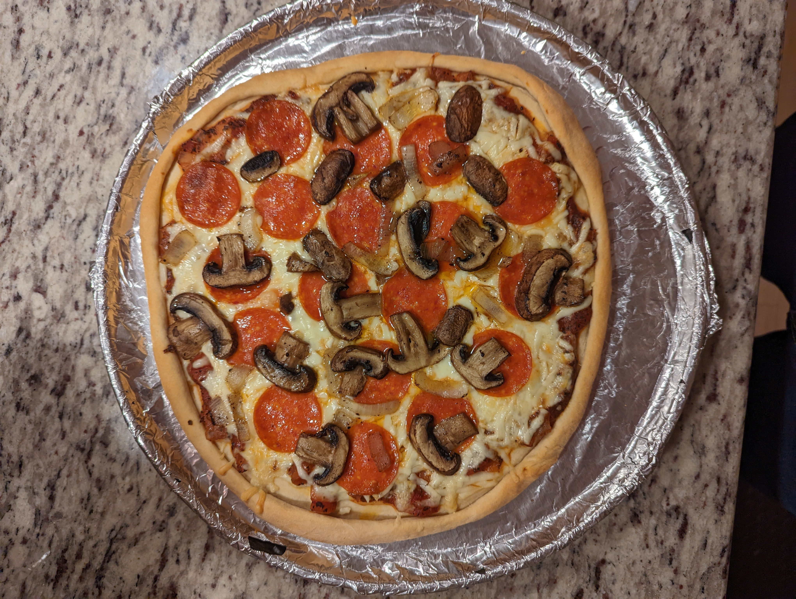

Home
Pizza

Description
A quick and easy pizza recipe with from-scratch crust.
This recipe is adapted from the thin crust variant of the
Pizza recipe in
Better Homes and Gardens New Cook Book (1981)
Ingredients
- 2½ to 3 cups all-purpose flour
- 1 package active dry yeast
- 1 teaspoon salt
- 1 cup warm water (115°F to 120°F)
- 2 tablespoons cooking oil
- Tomato Sauce
- 1 pound bulk Italian sausage or ground pork, cooked and
drained, or 6 ounces sliced pepperoni
- Sliced or chopped onion, green pepper, mushrooms,
olives, and/or canned green chili peppers
- 4 oz Mozzarella cheese
- 4 oz Asiago or Parmesan cheese (real parm, not shaky
cheese)
Steps
- Make crust dough
- In a large mixing bowl combine 1¼ cups
of the flour, the yeast, and salt
- Beat at low speed of electric mixer for ½ minute,
scraping bowl constantly.
- Beat for 3 minutes at high speed.
- Stir in as much of the remaining flour as you can mix in
with a spoon.
- Turn out onto a lightly floured surface.
- Knead in enough remaining flour to make a moderately
stiff dough that is smooth and elastic (6 to 8 minutes
total)
- Cover dough and let rest 10 minutes
- While dough is resting, pre-heat oven to 425°F
- Divide dough in half. Freeze half for later.
- On a lightly floured surface roll dough into a 13-inch
circle
- Transfer circle of dough to a greased 12-inch pizz pan or baking
sheet
- Build up edges slightly
- Bake just the crust in 425°F oven for 12 minutes or till
lightly browned
- Remove crust from oven
- Spread cooled Tomato Sauce over hot crust
- Sprinkle meat, vegetables, and cheese atop
- Return to the 425°F oven and bake for another 10-15 minutes,
or till bubbly